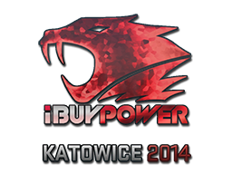
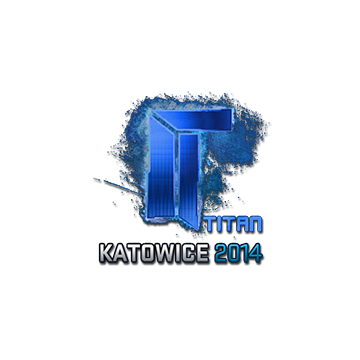
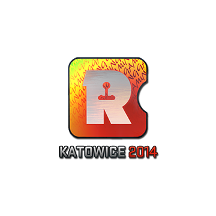
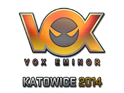
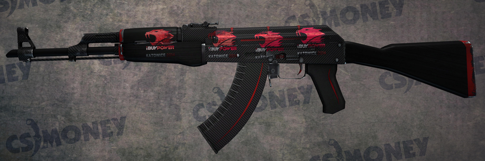
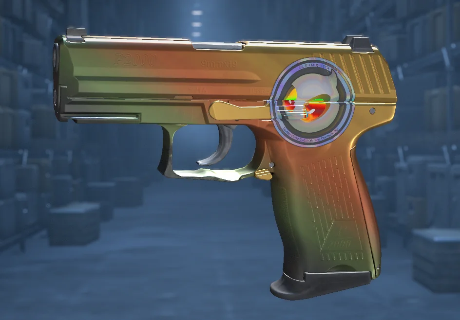
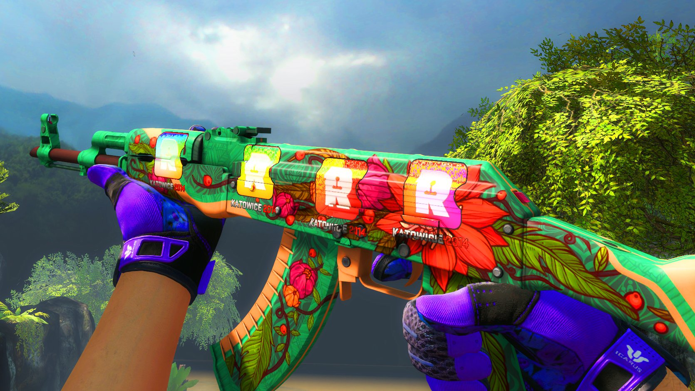
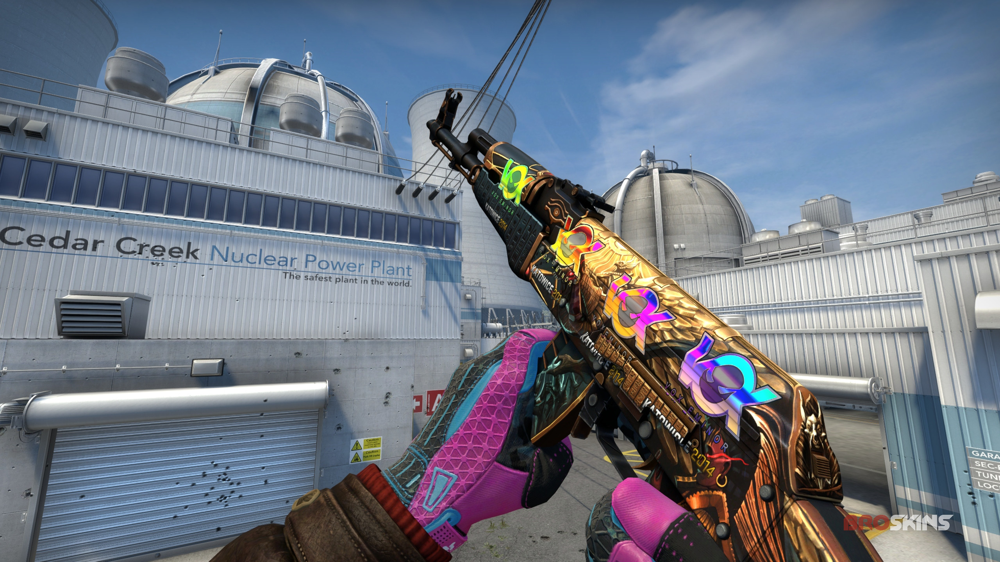

The Power of Sticker Investments

Within the CS:GO skin economy, stickers represent some of the most extraordinary investment opportunities. From tournament stickers to player autographs, these small decorative items have historically shown remarkable return potential, with some increasing thousands of times in value over the years.
Sticker Market Trend
EXCEPTIONAL
Katowice 2014: The Crown Jewel of Sticker Investments
The stickers from the EMS One Katowice 2014 tournament have become legendary in CS:GO investment circles. What began as inexpensive team logos (available for as little as $0.25 during the tournament sale) have transformed into some of the most valuable digital items in gaming history.
The second major tournament in CS:GO history, EMS One Katowice 2014, introduced the first team stickers to the game. These stickers came in two capsules: "Legends" and "Challengers," each containing 8 team logo stickers in both regular (paper) and holographic variants.
During the tournament, these capsules cost just $1, and after the event, they were discounted by 75% to just $0.25. At the time, few players recognized their future potential, and many applied the stickers to their weapons without a second thought.
Several factors contributed to their eventual value explosion:
- CS:GO was still a pay-to-play game with a smaller player base
- The tournament had limited viewership compared to modern standards
- Many stickers were consumed by being applied to weapons
- Some teams like iBUYPOWER and Titan would later disband, adding historical significance
- The clean, background-free design became highly desirable
The price evolution of Katowice 2014 stickers represents one of the most remarkable investment stories in gaming history:
Capsule Price History
- 2014 (Release): $0.25 (on sale)
- 2016: ~$200-300
- 2018: ~$1,000-1,500
- 2020: ~$5,000-7,000
- 2022: ~$10,000-11,000
- 2025 (Current): ~$20,000+
Total Growth
- Capsule Multiplier: ~80,000x
- Yearly Growth Rate: ~100-150%
- Outperforms: Most traditional investments
- Driven By: Extreme scarcity and collector demand
As of 2025, the most valuable individual Katowice 2014 stickers have reached extraordinary prices:
iBUYPOWER (Holo)
Current Value: ~$90,000-100,000
Starting Price: ~$1.00
Multiplier: ~90,000x
Why So Valuable: Team disbanded after a match-fixing scandal, creating a legendary status in CS:GO history.
Titan (Holo)
Current Value: ~$90,000
Starting Price: ~$1.00
Multiplier: ~90,000x
Why So Valuable: Organization no longer exists, and the bright blue holographic effect is considered aesthetically perfect.
Reason Gaming (Holo)
Current Value: ~$50,000
Starting Price: ~$0.80
Multiplier: ~62,500x
Why So Valuable: Disbanded organization with an attractive design and extremely limited supply.

iBUYPOWER (Holo)
$90,000+
The Crown Jewel
This sticker's iconic red holographic design and the team's infamous match-fixing scandal have cemented its status as the most valuable sticker in CS:GO history.
Fewer than 40 unused stickers are estimated to remain in circulation.

Titan (Holo)
$90,000
The Blue Gem
The Titan Holo's vibrant blue holographic effect makes it exceptionally desirable. The organization disbanded in 2016, further increasing its historical value.
Approximately 40 unused stickers remain in circulation.

Reason (Holo)
$50,000
The Rising Star
This sticker features a distinctive orange and white design that works well on many weapon skins. Reason Gaming's disbandment and the sticker's scarcity have driven significant appreciation.

Vox Eminor (Holo)
$50,000
The Australian Gem
The Australian team's logo creates a stunning holographic effect with its circular design. The team's popularity in the early CS:GO scene and the sticker's visual appeal have driven its value.
Modern Sticker Investment Strategy
While Katowice 2014 stickers have reached price levels unattainable for most investors, newer tournament stickers still offer excellent investment potential. Here's how to approach sticker investments in 2025:
Tournament Selection
- Major Tournaments: Focus on official Valve-sponsored Major events
- Team Performance: Consider teams likely to disband or rebuild rosters
- Design Quality: Distinctive, clean designs typically perform better
- Limited Editions: "Gold" and special variants have higher potential
Purchase Timing
- Sale Period: Buy during the 75% off sale at tournament end
- Quantity: Purchase in bulk to maximize returns
- Storage: Keep unused in inventory (never apply to weapons)
- Patience: Expect to hold for 3-5+ years for significant returns
Risk Management
- Diversification: Spread investments across multiple teams/tournaments
- Budget Control: Only invest what you can afford to lose
- Market Monitoring: Track supply and price trends
- Exit Strategy: Set target prices and profit-taking points
While no recent tournament stickers have matched the extraordinary returns of Katowice 2014, several have shown impressive performance:
Top Performing Tournament Capsules
- Katowice 2015 Legends: ~20x growth since release
- Cologne 2014 Legends: ~18x growth since release
- Atlanta 2017 Legends: ~15x growth since release
- Boston 2018 Challengers: ~12x growth since release
- Krakow 2017 Legends: ~10x growth since release
Top Performing Individual Stickers
- Titan (Foil) | Cologne 2015: ~50x growth
- s1mple (Gold) | Krakow 2017: ~40x growth
- Cloud9 (Foil) | Boston 2018: ~35x growth
- Virtus.pro (Holo) | Katowice 2015: ~30x growth
- Fnatic (Foil) | DreamHack 2014: ~25x growth
The influence of Chinese collectors and investors has been transformative for the sticker market since their entry around 2017:
- Market Acceleration: Chinese demand dramatically accelerated price appreciation
- Collector Focus: Particular emphasis on rare, visually impressive items
- High-End Dominance: Chinese collectors now own a majority of the rarest Katowice 2014 stickers
- Trading Platform Shift: Buff 163 has become the primary marketplace for high-value stickers
- Investment Culture: Stickers viewed as long-term stores of value amid currency restrictions
This influence continues to grow as more Chinese players enter the CS:GO ecosystem, providing ongoing support for sticker valuations.
The future of sticker investments remains positive, albeit with some key considerations:
- Supply Constraints: Older stickers continue to disappear from circulation
- CS2 Transition: The move to CS2 has maintained sticker compatibility, preserving value
- New Designs: Modern tournament stickers have evolved with more complex designs
- Increasing Awareness: More investors now target stickers, potentially reducing future returns
- Market Maturity: The overall sticker market has become more efficient and sophisticated
While we may never see returns like Katowice 2014 again, stickers remain one of the most reliable investment categories in the CS:GO economy.
Sticker Showcase




